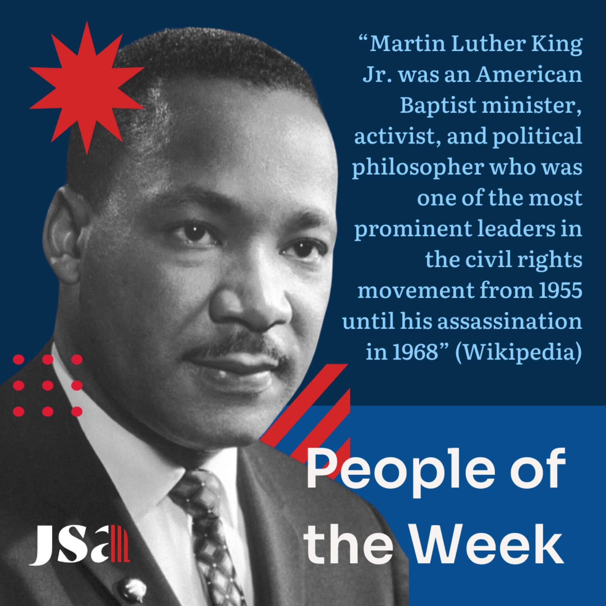
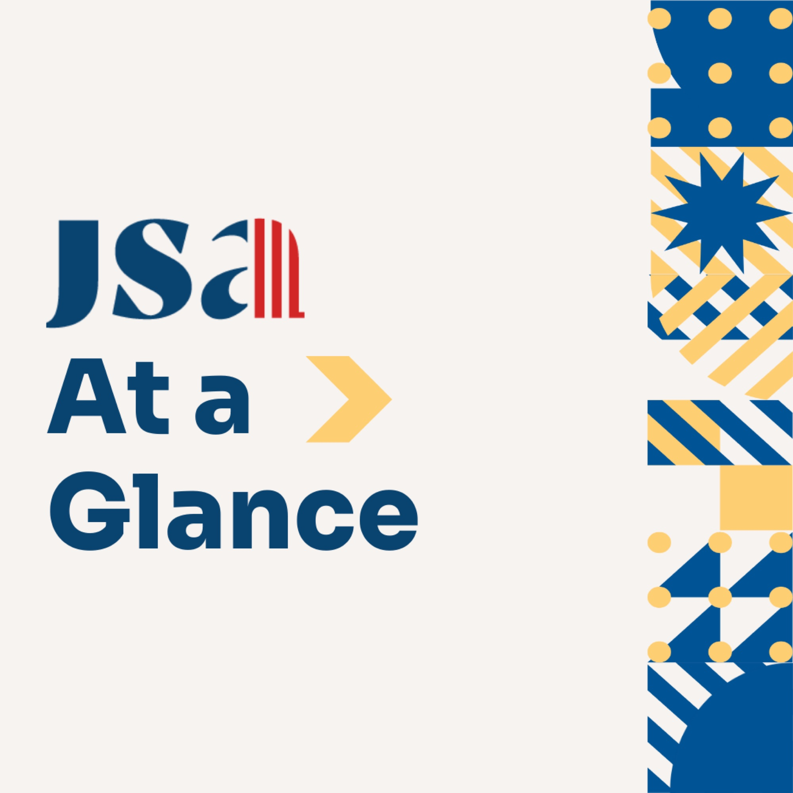
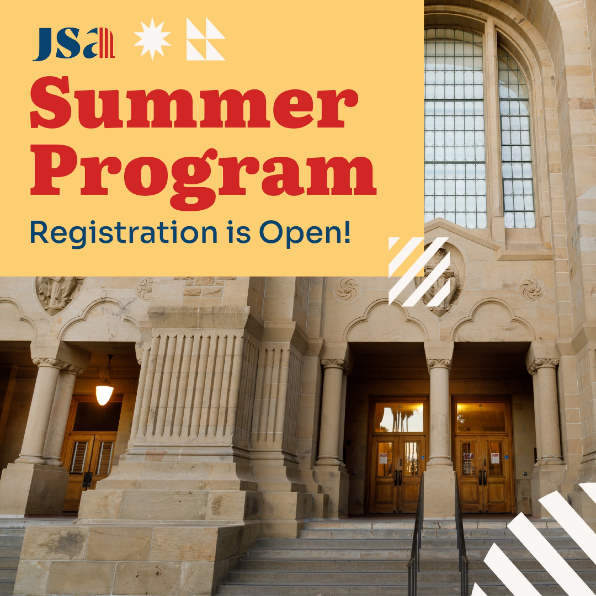
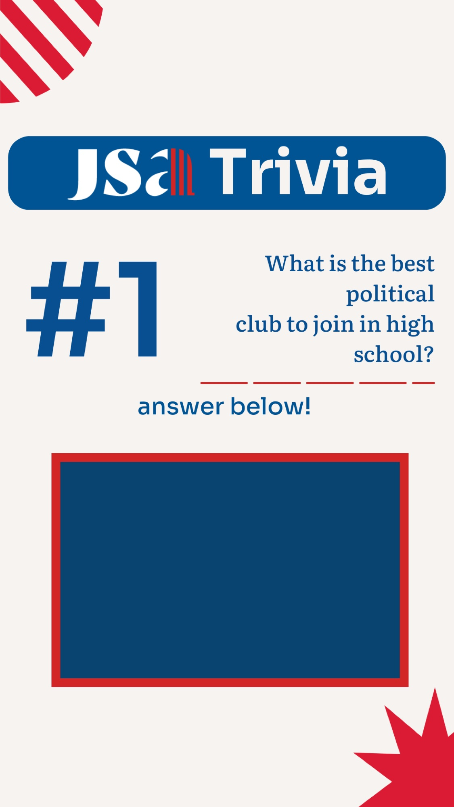
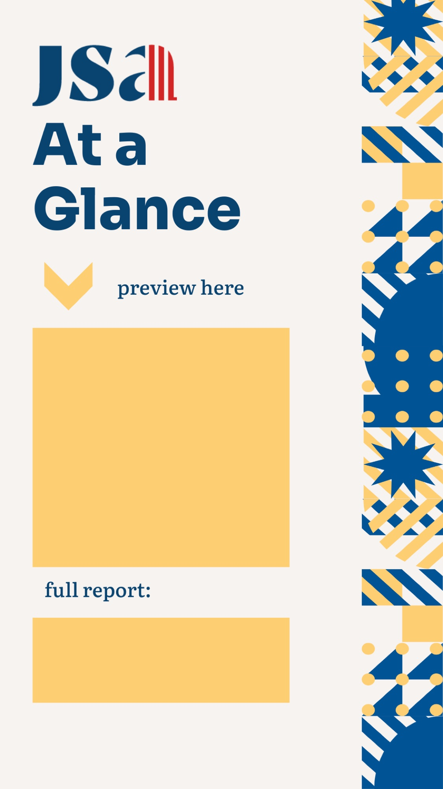
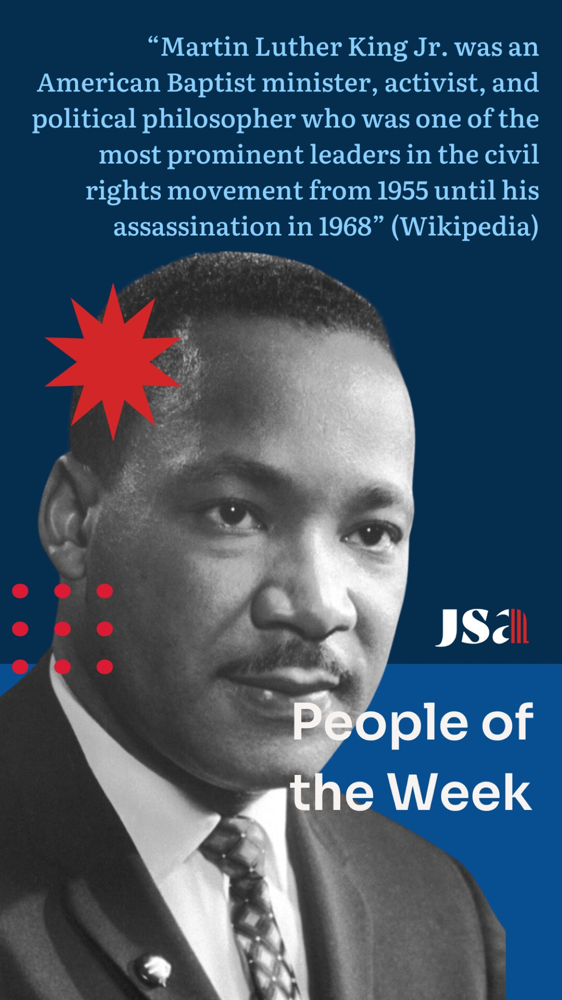

Junior State of America — Marketing
Junior State of America is a student organization that hosts conventions to discuss political topics, learn more about the US government, and debate relevant topics.

More Marketing Work




